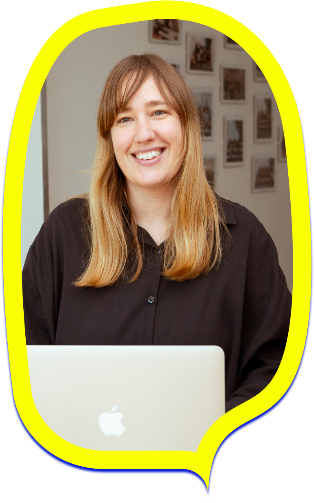

EL ESTUDIO
Irene Becker Studio nace en 2012 tras terminar la Licenciatura de Bellas Artes en la Universidad Complutense de Madrid como necesidad para hacer frente a todos los encargos que me hacían como diseñadora gráfica, ilustradora y pintora.
Tras más de 10 años como diseñadora y artista freelance, en 2023 me formo como desarrolladora web Full Stack en Codenotch, Madrid y me lanzo al diseño y elaboración de páginas web.

"En el diseño gráfico, el color es más que una paleta de tonalidades, es la herramienta que despierta emociones y comunica mensajes que dejan huella en la mente del espectador."
Irene Becker, Designer and Artist.